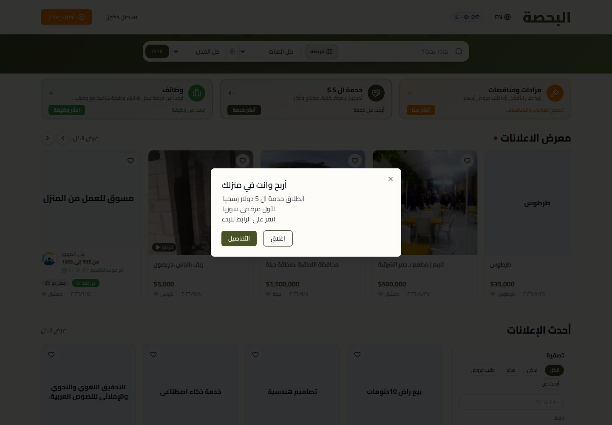
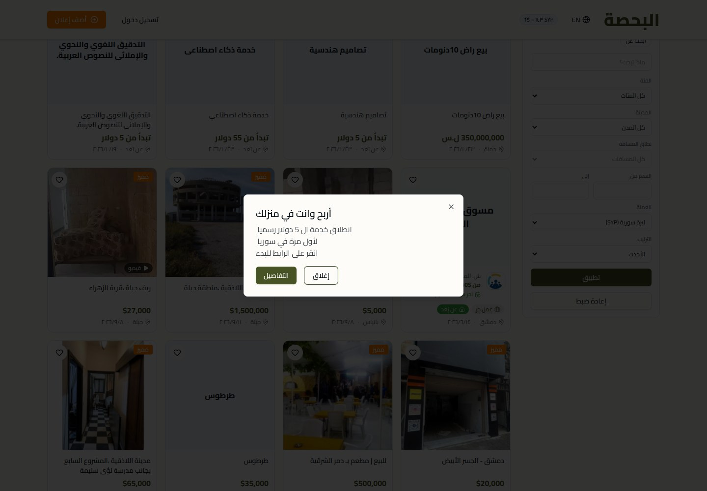
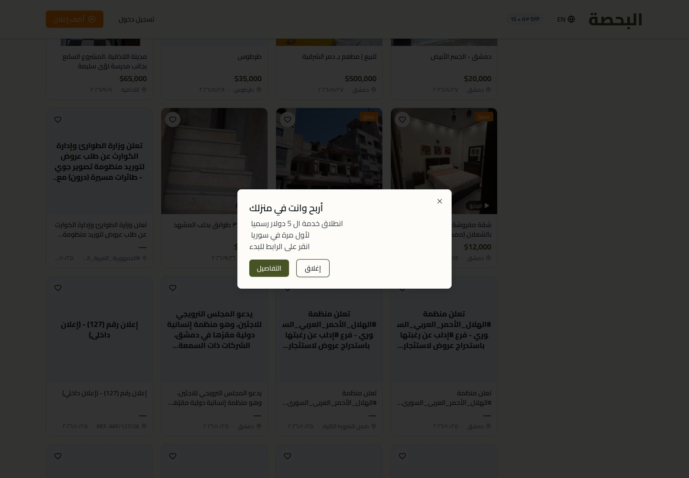
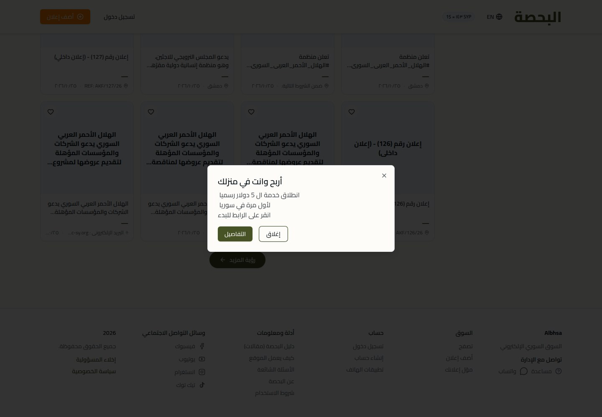
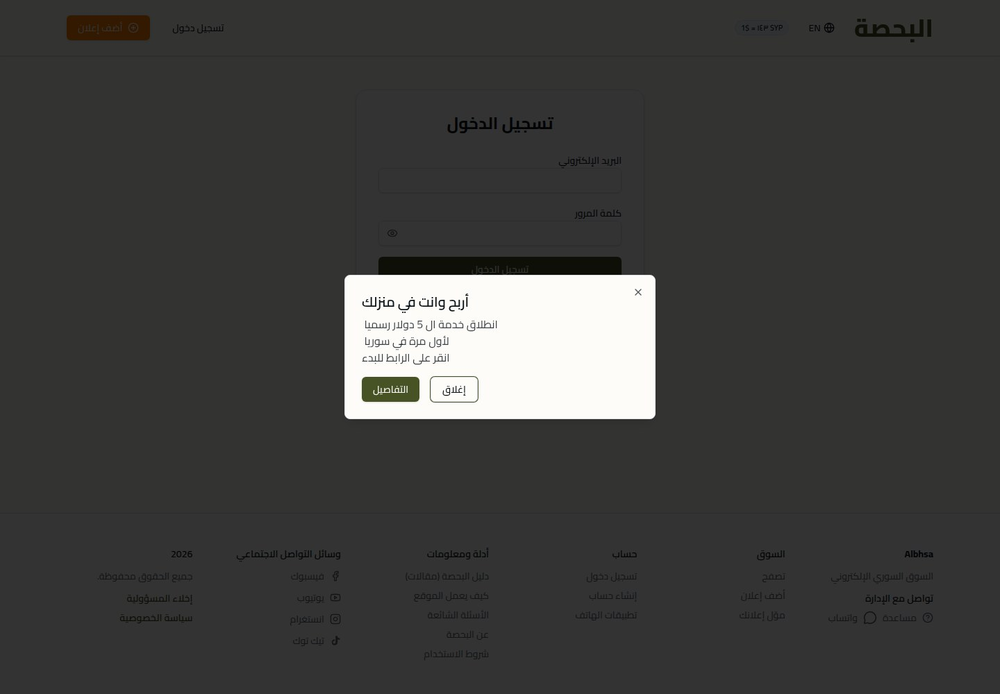
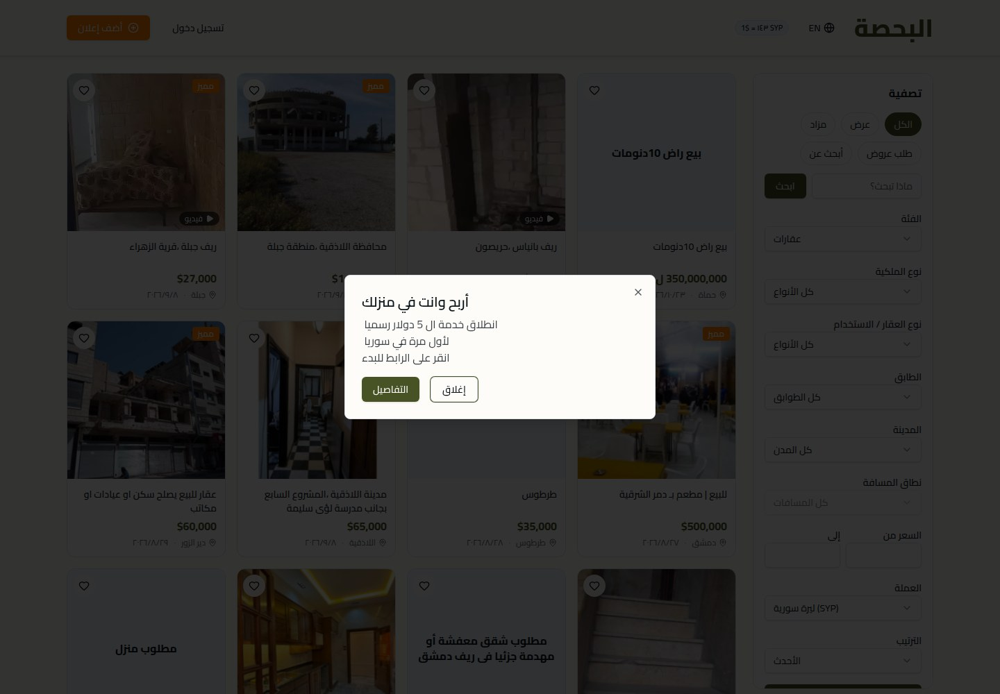
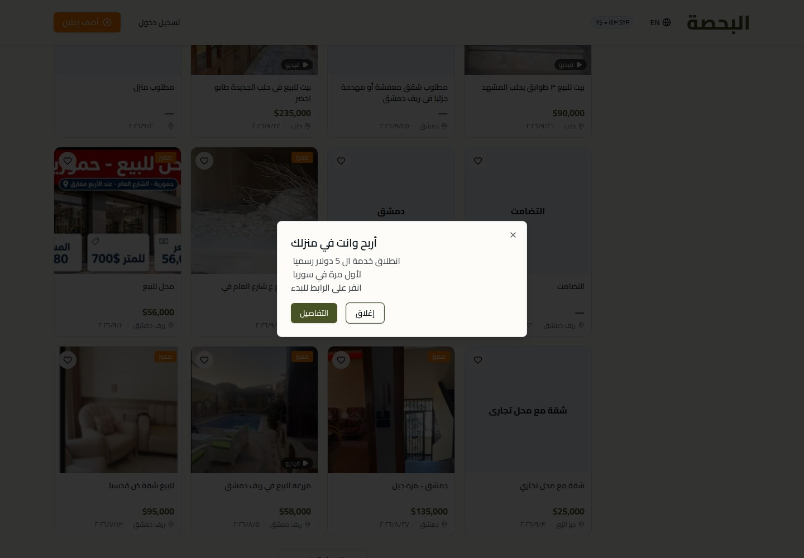
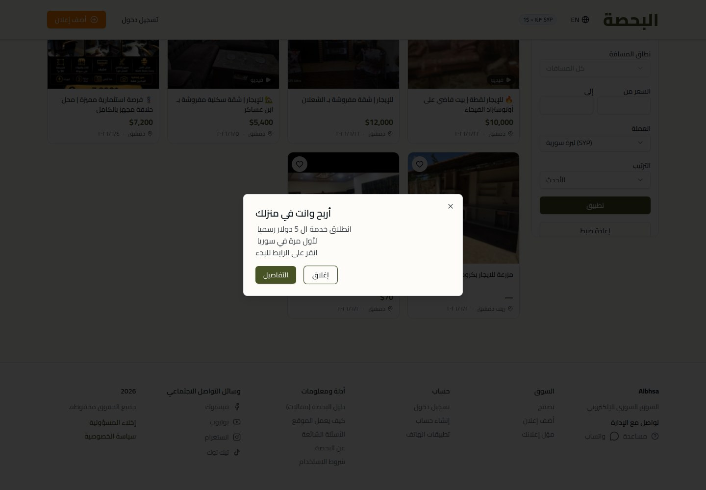
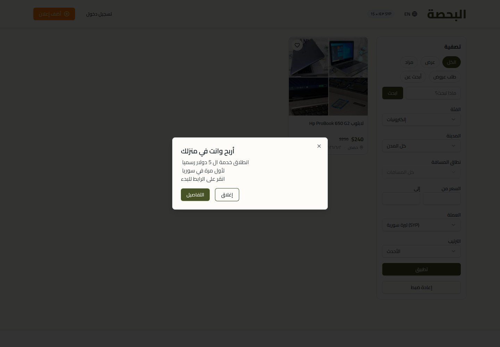
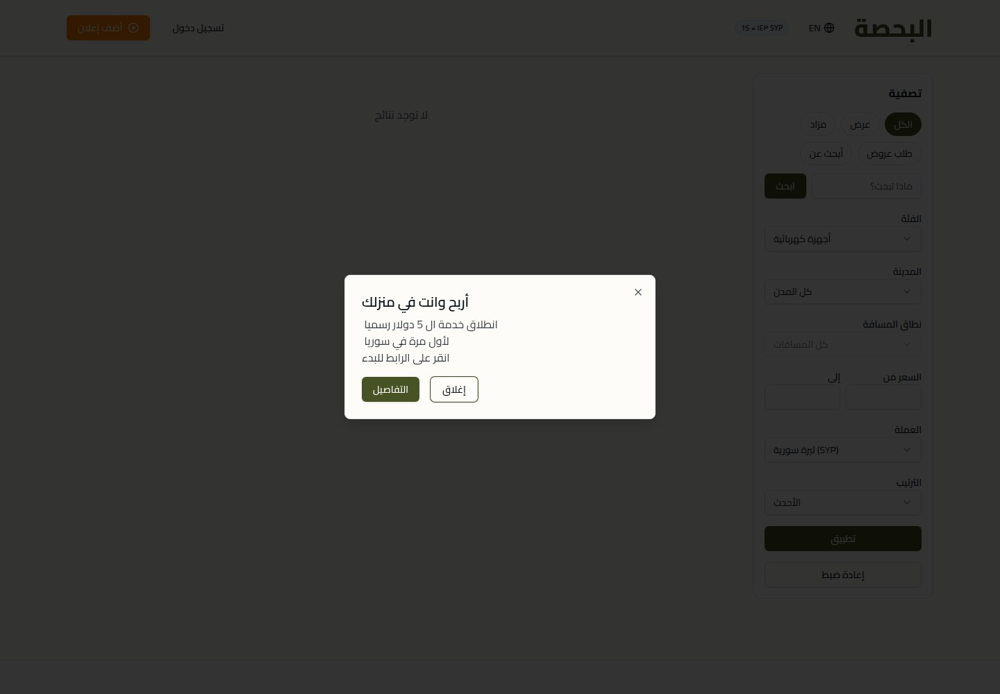

Albhsa
Discover and share what Syria has to offer.

WHAT IT IS
Syrian online classifieds and marketplace platform
The site presents Arabic text as an Arabic-language Syrian online marketplace for browsing and posting listings across areas including property, vehicles, jobs, services, auctions and tenders. It also has a separate catalog of remote digital services (“Arabic text Arabic text 5 $”).
This case study documents what the linked website presents. Individual contribution to this project has not been confirmed.
WHAT THE WEBSITE OFFERS
- Homepage has a keyword search field, category and city selectors, a search action and a map-search control; the homepage fields also expose Syrian cities.
- General browse page shows listing cards with titles, prices, locations and dates; some cards show photos, video or a featured label.
- Browse results page provides filters for listing type, keyword, category, city, distance, price range, currency and sort order, plus apply/reset controls.
- The /services catalog displays remote-service cards with descriptions, categories, starting prices and stated delivery times; the inspected catalog includes design, AI, portfolio-layout and other digital services.
- A service detail page displays an image, description, deliverables, fixed starting price, delivery estimate, optional paid add-ons, seller information and buyer reviews; its order prompt says sign-in is required.
- About and how-it-works pages explain the marketplace's stated coverage of property, vehicles, jobs, services, auctions and tenders, and describe browsing and posting flows.
- Auctions and tenders have separate tabs/routes. The inspected auctions page says there are no active auctions, while the tenders page contains multiple tender cards.
- The site exposes sign-in and add-listing links and WhatsApp help/contact links; these were not used to submit information or access an account.
VISITOR JOURNEY
Homepage: enter a search term, choose a category/city, optionally use map search, then search; these controls are visible, though no search was submitted.
AUTHENTIC SCREEN CAPTURES · 11
Inside the experience.
Genuine, distinct screen captures supplied for this project. No screenshots have been fabricated or duplicated.









